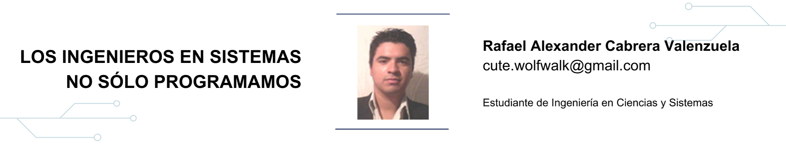
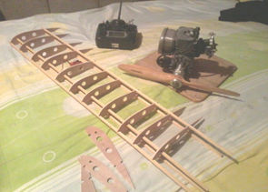
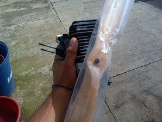
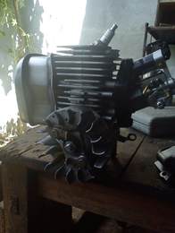
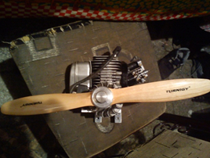
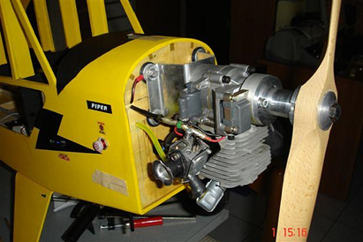

9 Los ingenieros en sistemas no sólo programamos

9.2 Introducción
Para un ingeniero los elementos fundamentales en el desarrollo de un proyecto son las capacidades de dirigir, planificar e implementar ideas que conlleven el avance significativo para el equipo de trabajo. La aeronáutica es una de las ramas de la ingeniería aeroespacial que permiten la construcción de aeronaves a escalas muy grandes. Para la construcción de un 747 la empresa Boeing emplea en el diseño y planificación a más de 800 profesionales entre físicos e ingenieros en mecánica, química, informática y aeronáutica.
Por más de 10 años la ilusión de construir un avión a escala ¼ ha sido la inspiración de estudiar informática y electrónica. Durante el tiempo de estudio en Ingeniería en Ciencias y Sistemas comprendí los conceptos del funcionamiento de las computadoras con fines de adaptarlos a un controlador que me permitirá manipular los movimientos de un avión a escala. Por otra parte, el estudio profundo de cómo los aviones vuelan me permitió establecer el camino correcto para emprender la construcción de un modelo a escala de un “Piper Cub J3” (ultra livianos de 2 personas)
Conforme avance en la carrera pude aprender sobre nuevas formas de crear un dispositivo que controla un aparato a distancia remota. En los cursos de Organización Computacional y Arquitectura de las Computadoras 1, implementé los segmentos fundamentales de un control remoto con alcance apropiado para manipular la aeronave a una distancia de 6 kilómetros. Fue en el 2012 donde el sueño de tener un avión a escala empezaba a tomar vida, las primeras pruebas del control remoto dieron sus frutos cuando por medio de un microcontrolador conectado con “bluetooth” dieron origen a la manipulación de objetos a 10 metros de distancia, a partir de ese momento la búsqueda por mejorar el dispositivo se intensifico cada vez más. A finales del 2013 tengo por primera vez el radio control que comandaría la aeronave a una distancia de 2 kilómetros.


A partir de febrero del presente año empieza la construcción física mi sueño: un avión a escala ¼, llevando con ello una serie de planos que permitieran el cálculo eficiente de cada una de las piezas del avión.
El análisis de la capacidad del motor, la protección de la estructura y la búsqueda de materiales me hicieron suspender por 2 meses la construcción. Además, el principal factor que ha bloqueado el avance del desarrollo y construcción de la aeronave es el financiero, ya que el proyecto está valorado en un aproximado de Q.5, 300.00, lo que implica suspensiones muy largas por falta de dinero. Actualmente, casi el 45% de la aeronave se encuentra construida esperando que a finales de este año pueda completar el proyecto.

Puede concluir que dentro del desarrollo de este proyecto hay muchos factores elementales e indispensables, pero la de unión de conceptos de diferentes áreas me permitió que el desarrollo de la propuesta sea una realidad. El concepto entonces del ingeniero en sistemas es ver por medio de segmentos críticos de un proyecto, la convergencia de funcionamiento de todas las partes que conforman dicho sistema. Es preciso mencionar que para poder realizar este tipo de proyectos el ingeniero en sistemas debe tener la habilidad de poder proyectar la solución de problemas de una forma creativa, tomando énfasis en innovaciones relevantes que permitan nuevos cambios en el desarrollo de soluciones efectivas y eficaces , como también una buena planificación en factores críticos del proyecto y un análisis de riesgos probables dentro del desarrollo de la solución. Todas estas habilidades del ingeniero en sistemas hacen que el alcance del proyecto tenga resultados gratos y satisfactorios.
Lamentablemente nuestras ideas y visiones son cortas casi siempre orientadas a ser un empleado, cuando deberían ser lo contrario. La visión de un Ingeniero en Sistemas debe sobre pasar la idea que nacimos solo para programar. Como estudiante he tenido la libertad de crear proyectos fuera del alcance de la carrera, pero los conocimientos adquiridos me han permitido ver la relación de funcionalidad de los mecanismos o subsistemas que van desde el control de aceleración del motor hasta la manipulación de los ángulos de precisión de cada alerón para hacer girar el aparato, cálculo de altitud, control de combustible etc.
Las fases de la administración de un proyecto pueden ser aplicadas no importando el tipo, ejemplo de esto es la construcción del aeroplano a escala, en donde se aplicaron tareas de análisis, planificación, diseño, construcción y pruebas, más aun así existen tres restricciones que afectan a un proyecto en general , costo, tiempo y alcance . Estos tres factores son parte del eje principal en la cual gira el desarrollo de un proyecto, por tal razón el enfoque de hacer las cosas con excelencia debe perdurar desde el inicio de un proyecto hasta la finalización del mismo. Pueda ser que por tener una solución rápida demos resultados malos, o que los resultados sean buenos y óptimos pero lentos en tiempo, por tal razón se recalca la planificación y el análisis para disminuir la probabilidad de acontecimiento en cada una de las tres restricciones que se encuentra expuesto un proyecto.

La visión como Ingeniero en Sistemas continúa al fabricar este avión en escala; el modelo a escala me servirá para observar los pasos básicos a seguir para construir un avión a escala real. La idea evoluciona, la visión se incrementa al perseguir un nuevo sueño aún mayor. Tal vez en una edición posterior de la revista les comente como ha avanzado mi proyecto actual y los planes para el siguiente.

9.3 Conclusiones
- Ingeniería en sistemas no es sólo programar sino sobrepasar esos límites. La carrera nos enseña como planificar para emprender proyectos de una gran magnitud, debemos ser innovadores con pensamientos que nos lleven a ser profesionales que logran trascender no sólo en un campo; como ingeniero somos capaces de investigar y crear nuevas tecnologías o mejorar las existentes. Se puede enfatizar que las herramientas proporcionadas por la carrera son adecuadas y necesarias para emprender modelos de negocios que nos conviertan en empresarios donde nuestro rol no será detrás computadora programando.
- La visión, sueños y metas representan los cimientos para alcanzar logros, debemos ser perseverantes en nuestras metas, el esfuerzo y excelencia son parte del éxito. Arriesgarse a crear o desarrollar un proyecto nos da la experiencia necesaria para ser mejores profesionales. No es congruente que un ingeniero en sistemas se quede a la espera de lo que suceda al contrario debe entender el porqué de las cosas. Recordemos que en algunas ocasiones perdemos para ganar, es necesario centrar nuestra mente en un objetivo en específico; saber qué es lo se quiere es una de las llaves para emprender el camino para alcanzar un sueño o meta.
- La perseverancia por alcanzar los sueños nos hacen inmunes ante las posibles caídas durante le ejecución del desarrollo de un proyecto. Las virtudes elementales de un ingeniero en sistemas deben ser: la fortaleza, la perseverancia y sobre todo la esperanza de alcanzar el éxito en lo que nos proponemos. Saber que por cada fase que atravesamos en el desarrollo de nuestras metas es una lección de aprendizaje que nos permite ampliar nuestra mente al punto de retroalimentarnos con nuevas formas de crear o inventar. Veamos cada obstáculo no como un problema que nos bloquea y no nos permite continuar, al contrario veamos como una oportunidad de aprender a solucionar problemas, conocer que tan eficaces somos al momento de enfrentarlos y solucionarlos. Mantener mi persistencia por ver volar mi modelo a escala me han convencido que las metas que uno se propone tiene una característica muy peculiar y es qué todas son alcanzables, lo que empezó como una idea ahora se está convierto en algo tangible y funcional.
9.4 Referencias
- [1] Manual de instrucción http://manuals.hobbico.com
- [2] Foro RC Groups http://www.rcgroups.com
- [3] Great planes http://www.greatplanes.com
- [4] 8Ft Wingspan Coroplast RC Piper Cub Flown by 25cc Weed Trimmerhttp://www.instructables.com
- [5] How Airplanes Fly http://www.youtube.com